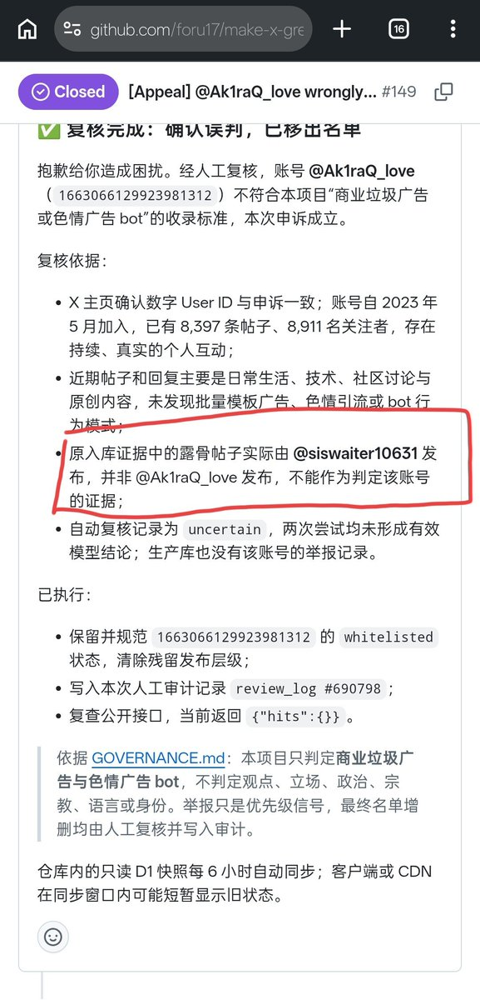
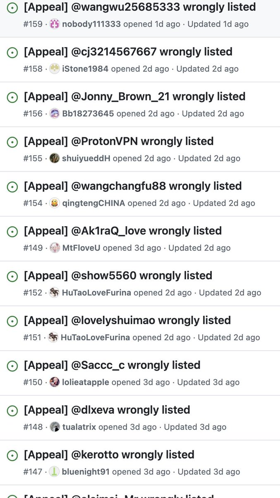

Akiramenai💫
@Ak1raQ_love
在这个列表上看到我了（149），那我顺便就说一下
我的账号被误判的原因是有人将别人发布的露骨内容帖子栽桩到我头上，然后它这个也不验证一下数据就直接判定？？？
我怀疑有心人利用这个给大量无关账号举报
也由此可见这个插件的审核有多草台班子，我奉劝大家还是别用这种垃圾玩意了


citron🍢🍋
@vanillaCitron
我觉得 @luoleiorg 的这个拉黑插件的设计还是有点问题，申诉成本比举报成本更高（举报一点就完成，申诉要开 issue 而且时间很久），目前看到的几个有争议的账号或者开通广告服务的官方账号都在名单中是「100% 人工确认」。要知道我要拉黑的是那些 AI 机器人水军，而不是持有不同意见的真人。 https://t.co/NFzKgLMw1I